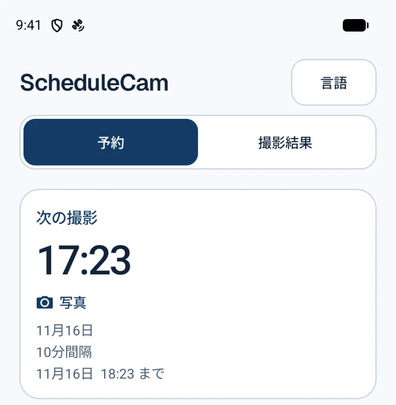
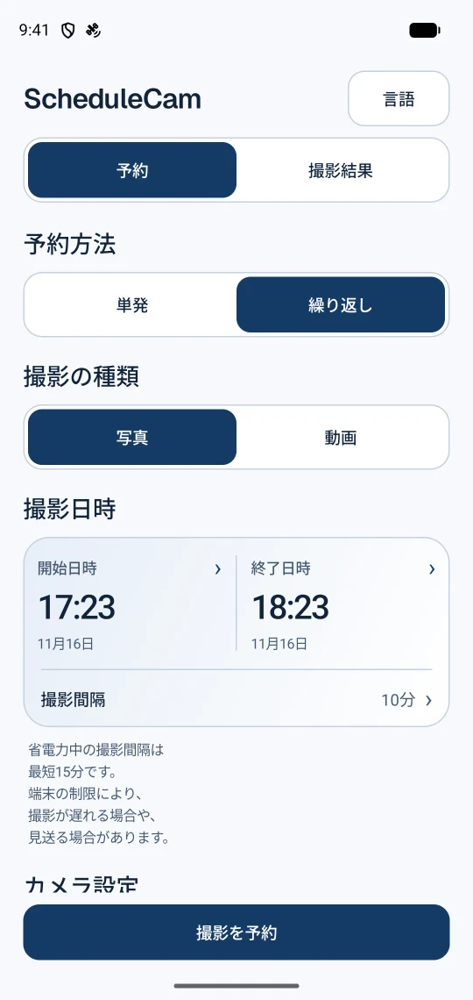
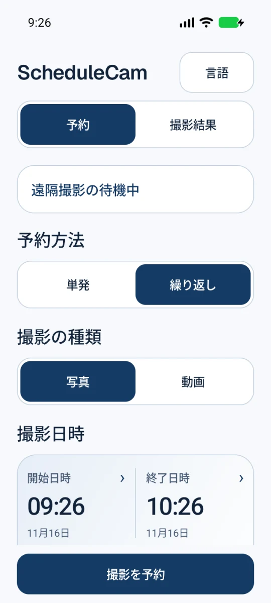
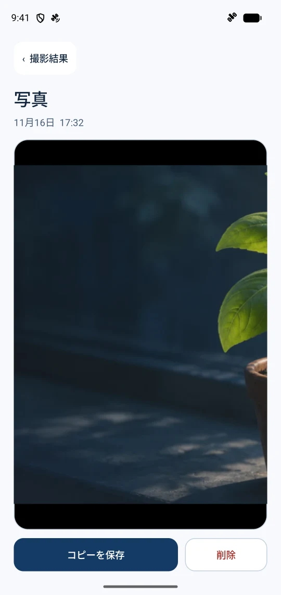
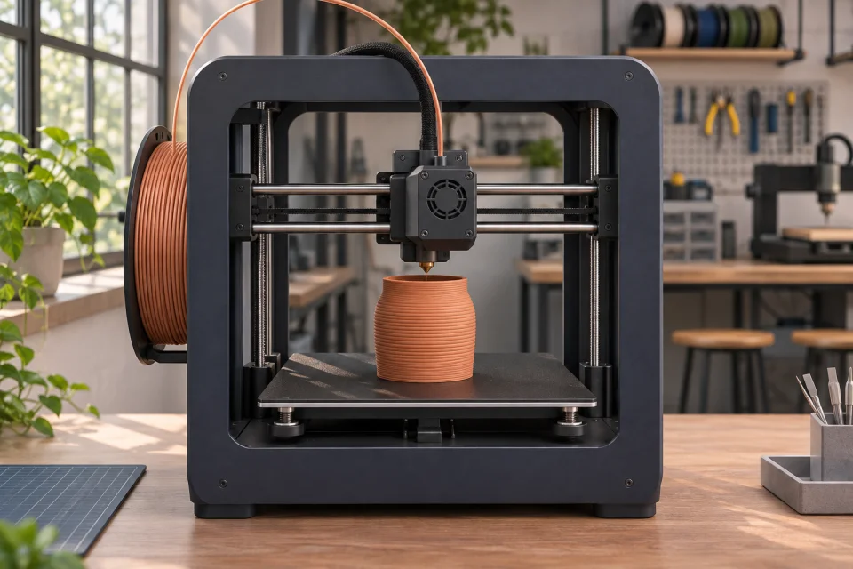
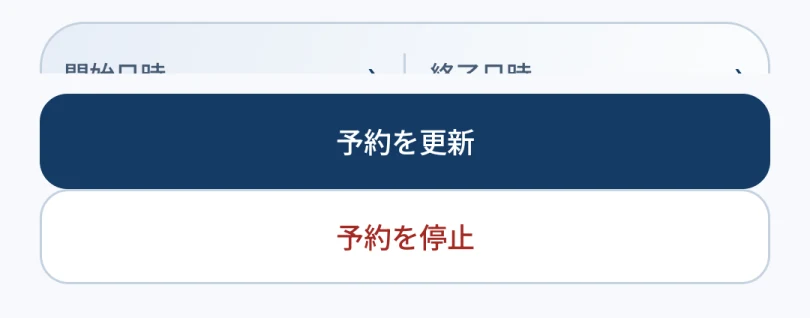

Driveのみ
Driveでファイルを確認できた後に、スマホの原本を削除して空き容量を確保します。
Androidの予約撮影アプリ
画面OFFでも、スマホをロックしたままでも、指定した時刻に写真・動画を撮影。端末内保存を選べば、撮影結果をスマホだけに残せます。
アプリの画面 遠隔撮影 画面OFF
画面OFF
消灯・画面ロック中の撮影
カメラを被写体に向け、撮影を予約を押します。画面の案内に沿ってカメラ・アラーム・通知を許可し、必要ならもう一度予約します。「次の撮影」が出たら、ディスプレイを消灯したり、スマホをロックしたりできます。
撮影間隔と省電力設定 画面オフ・ロック中の撮影手順 →
遠隔撮影
別のスマホやパソコンのブラウザから写真・動画を撮影できます。撮影側のAndroidでGoogle Driveを連携し、カメラを設定してから遠隔撮影を待機を押します。
両方の端末をインターネットに接続します。操作側のブラウザで同じGoogleアカウントにログインしてCapture nowを押し、転送が終わったファイルをDriveで開きます。
遠隔撮影ページを開く（英語）例 · 3Dプリントの仕上がりを確認
プリントの完了を聞いたら、ブラウザから撮影を指示します。
スマホが設定したカメラで撮影します。
予約撮影・インターバル撮影
撮影日時を最大30件指定できます。午前・昼・夕方の写真を撮ったり、決めた時刻から動画を録画したりできます。
開始・終了日時と間隔を指定します。スマホを固定して、同じ構図の写真や短い動画を繰り返し撮影できます。
端末で使えるレンズ・ズーム・解像度を選びます。動画は1〜10分の長さと、音声の有無を指定できます。
このデモで予約方法、カメラ、保存先を選び、撮影を予約を押すと、設定内容と次の撮影時刻を確認できます。

自動アップロード
Googleアカウントを連携すると、新しい写真や動画が自分のGoogle Driveに自動でアップロードされます。同じアカウントでScheduleCamフォルダを開けば、別端末からも確認できます。

Driveでファイルを確認できた後に、スマホの原本を削除して空き容量を確保します。
スマホとGoogle Driveの両方に撮影結果を残します。
転送待ちのファイルはスマホに保持し、再接続後にアップロードを再試行します。


ネットワークカメラとの比較
手元のAndroidでレンズ・ズーム・解像度を選べます。高解像度の写真なら、植物の葉、計器の目盛り、造形物の表面などを拡大して確認しやすくなります。
必要な時間だけ予約撮影し、ファイルをAndroidの端末内に保存できます。端末内だけに保存する予約撮影は、Googleアカウントやインターネット接続なしで使えます。
リアルタイム視聴、動体検知通知、赤外線による夜間撮影には、対応するネットワークカメラが適しています。対応機能は機種によって異なります。
800万画素の写真は、1080pの動画1コマに比べ画素数が約3.9倍です。解像度や画質は、カメラ・レンズ・光量・設定に左右されます。
活用例

写真の予約
外出中の正午に自動給餌器が動くなら、愛犬がいつも休む場所を12時10分と12時30分に撮影。帰宅後に、食事後の過ごし方を日ごとに比べられます。

写真の予約
机を置きたい壁にスマホを向け、午前9時・正午・午後3時に撮影。外出している間に、どの時間帯に日差しが届くか分かります。
写真の予約
水槽の照明を午後1時に点灯する設定なら、その前後の12時55分と1時10分を予約。2枚を比べて、照明が切り替わったか確かめます。
外出先でタイマーを変更したら、新しい点灯時刻のあとに遠隔撮影で確かめます。
毎日の写真
旅行前に植物の受け皿へカメラを向けます。毎朝の水やりから30分後に同じ場所を撮り、受け皿の水の量を日ごとに比べます。
毎日の写真
朝は別の農園で働く日でも、収穫前の午前8時に同じ房を撮影。日ごとの色づきを比べ、収穫に入る列を決める参考にします。
写真の予約
別の区画で作業する間、配管末端の流量計を午前7時55分と8時10分に撮影。かん水開始の前と10分後を見比べます。
ポンプの開始が遅れ、開始通知を受け取ったら、その10分後に遠隔撮影します。
写真の予約
温室が無人になる時間帯に、開く予定の10分後と閉じる予定の10分後を撮影。換気窓が所定の位置まで動いたか確認します。
写真の予約
夜間に無人になる場所で、照明のある水位計にカメラを向けます。午前2時から2時30分までの補水の前後を撮り、水位の差を確認します。
動画の予約
正午に遮光幕のタイマーが動くなら、11時59分から2分間を録画。幕が端まで動いたか、途中で停止したかを見返せます。
屋外では使用端末の防水性能と動作条件を確認し、雨・水しぶき・結露を避けられる場所に設置してください。 Googleの防水性能の案内

繰り返し写真
外出前にプリントを開始し、開始から10分間隔で写真を予約します。別の回の同じ経過時刻と見比べ、角が浮き始めた時点を探します。
外出中にプリンターから完了通知が届いたら、遠隔撮影で仕上がりを確認できます。
繰り返し写真
夜間の硬化試験で、開始時とその後30分ごとに撮影。試料ごとに同じ経過時刻を並べ、どの塗膜に先に泡が出たか確かめます。
毎日の写真
配線班の作業後、午後4時45分に目印を付けた壁を撮影。翌朝に次の班が入る前に、どこまで終わったか確認できます。
写真の予約
午後7時に照明が消える店舗で、6時55分と7時10分に撮影を予約。タイマーが動く前後を見比べ、どの照明が残ったか確認します。
写真の予約
撮影が認められた会場で、開場予定の5分前と10分後に入場列の範囲を撮影。各会場で列がどこまで伸びたかを比べ、次回の受付配置の参考にします。
開場が遅れたら、実際に開場してから10分後に遠隔撮影します。
使い始める前に

繰り返しの写真撮影は1分単位で最短1分、初期値は10分です。バッテリーセーバーやDozeの作動中は、15分未満の間隔を15分に調整します。撮影時刻は端末や省電力設定の影響を受けます。
動画を選び、音声を「あり」にして、マイクへのアクセスを許可します。繰り返しの場合は、録画の長さより長い間隔を設定します。
保存先を端末にすると、予約撮影の写真・動画をオフラインでも保存できます。Drive連携時は、接続が戻ると転送を再試行します。ブラウザからの遠隔撮影にはDrive連携とインターネット接続が必要です。
撮影結果から写真を開いたり、動画を再生したりできます。書き出すときはコピーを保存を押してください。Driveに転送したファイルは、ScheduleCamフォルダで確認できます。
アプリで予約を停止を押すか、待機中の通知から停止します。予約の通知を消した場合も予約は停止します。端末を再起動したら、アプリを開いて再予約してください。
カメラが使えない回は撮影を見送り、アプリまたは通知に理由を表示します。繰り返し予約が有効なら、次の撮影予定まで待機します。
対応端末とプラン
カメラを搭載したAndroid 14以降の端末に対応。アプリの表示言語は端末に合わせるか、アプリ内で選べます。